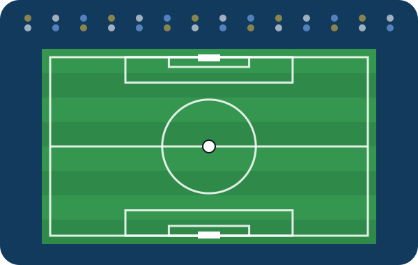
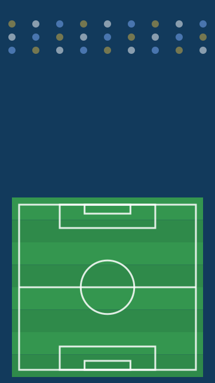
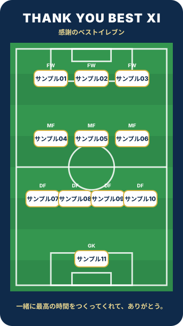

イベント・成長
MY EVENT WORLD DESIGNマイイベントは「世界観」でファンの記憶と団結をつくる
- 原本：8月の戦略❹ マイイベ編（現場の戦略）
ギフトを集めるのではない。みんなで一つの世界をつくる。開催理由から終了後の感謝まで、一つのコンセプトでそろえる方法。
サッカーゴールで考える一つの世界
- 開催理由記念日・事前告知
- 世界観サッカー大会
- 当日BINGO・実況
- 終了後THANK YOU BEST XI
企画名・ギフト・背景・BINGO・リアクションを、
一つの意味でつなげる。
マイイベントが「ギフト集め」で終わってしまう
こんなことで迷っていませんか。
- ギフトと目標数を決めたら、それで準備が終わってしまう
- イベント名・BINGO・リアクションがバラバラ
- 終わったあと、何も残らない
イベントを完成させるのは、ギフトの数ではありません。なぜ開催するのか、どんな世界を体験してもらうのか、終わったあと何を残すのかです。
現場で使われたサッカーゴールの企画を例に、9つの要素を一つの世界観でそろえる方法と、ギフトTOP11をベストイレブンとして称える終わり方を学びます。
読み終えると、こんな状態へ
自分のイベントの世界観を決め、企画名・ギフト・背景・BINGO・リアクション・終了後の記念が、同じ理由で説明できるようになります。
たとえば、サッカーゴールを使うなら。
- 「夢のベストイレブン選抜戦」と名前を付け、7日前から予告する。
- 当日はスタジアムの背景とサッカーBINGO。ギフトには「ナイスゴール！」。
- 終了後、ギフトTOP11の名前をサッカーコートに並べてストーリー投稿。次回のLIVEで振り返る。
「ギフトを集めるだけのイベント」から、「世界観をつくり、ファンと一つの記憶を共有するイベント」へ。
このページで進む道
- 30秒要点
- 9つの要素
- サッカー企画
- LIVE画面とリアクション
- BEST XI
- 終了後と次回
- 他ジャンルと失敗
- 一貫性チェック
攻略ノート
このコンテンツで学べること

9つの要素
開催文脈から次回への接続まで。
LIVEに効く理由企画全体が一つの意味でつながります。
だから伝わる企画になる
サッカー企画の実例
名前・背景・BINGO・リアクションの統一。
LIVEに効く理由そのまま自分の企画に置き換えられます。
だからすぐ形にできる
BEST XI
ギフトTOP11を記念画像で称える。
LIVEに効く理由応援が記憶として残ります。
だから次も一緒に楽しめる
他ジャンルへの応用
夏祭り・宇宙旅行・誕生日。
LIVEに効く理由同じ設計で何度でも企画できます。
だから枠の文化になる
学んだ先に変わること
- 配信者がすること開催理由と世界観を決められる
- すべての演出を一つの意味でそろえられる
- 視聴者視聴者が、物語に参加している感覚を持てる
- LIVE終了後の記念が、次のLIVEの話題になる
- その先定番企画が、枠の文化と歴史になる
イベントが、ファンとの思い出になる。
ファンの増加や売上を保証するものではありません。
このページの最後に、「世界観の一貫性チェック」と「世界観ビルダー」を書きます。
30秒でわかる：ギフトではなく、世界をつくる
30秒でわかる要点
マイイベントは、ギフトを選んで開催するだけでは完成しない。
開催する理由をつくり、イベント全体の世界観を決め、企画名・ギフト・背景・BINGO・リアクションを統一する。
サッカーゴールをテーマにするなら、配信そのものをサッカー大会として演出する。
そして、終了後にはギフトTOP11をベストイレブンとして称え、サッカーコートの記念画像を制作する。
その体験をストーリー投稿として残し、次の配信でも振り返れるようにする。
イベントの世界観を、開催前から終了後まで一貫させることで、応援を記憶に残る体験へ変える。
ギフトを集めるのではない。みんなで一つの世界をつくる。
開催理由から世界観をつくり、世界観から体験をつくり、体験から記憶をつくる。
よくあるマイイベント
「今日はサッカーゴールを100個集めたいです」という目標だけを案内する。
100個は説明用の架空の例です。
世界観を設計したマイイベント
「今日はみんなで夢のベストイレブンをつくる特別な試合です！」と案内する。
- ギフト→ ゴール
- コメント→ 応援
- BINGO→ 試合の進行
- リアクション→ 実況
- 達成→ 勝利
- 終了後の記念投稿→ 選抜チーム発表
いちばん大事なこと施策を並べるのではなく、意味でつなげること。
現場の実例から：おさえる11のポイント
- マイイベントでは、文脈づくりを重視する。
- 記念日や事前告知を、イベントを実施する理由として利用する。
- イベントのコンセプトを決めたら、関連する要素をすべて統一する。
- 過去に存在した「サッカーゴール」というギフトを用いた企画例がある。
- サッカー関連のイベント名にする。
- BINGOや紙の進行アイテムも、サッカー関連にする。
- ギフトリアクションも「ナイスゴール」「ハットトリックおめでとう」など、世界観に合わせる。
- 可能であれば、配信ルームの背景も変える。
- 終了後には、ギフトトップ11を「ベストイレブン」として表現する。
- サッカーコートの画像に対象者の名前を配置し、ストーリー投稿する。
- その表現を通じ、応援者への承認・感謝とイベントの記憶づくりを行う。
現場のライバー運営で実際に使われた考え方です。開催日・イベント名・結果などの細かな記録は確認できていないため、載せていません。
次は、世界観をそろえる9つの要素。
世界観をそろえる9つの要素
図解01EVENT WORLD MAP｜9つの要素でつくる一つの世界
EVENT
CONCEPT
要素を押すと、役割・サッカー企画での例・チェック項目が出ます。
開催文脈
なぜ今、このイベントを開催するのか。（例：誕生日・周年・初配信の記念日・過去の挑戦の続き・大きなイベント前のプレ企画。）
サッカー企画なら記念日に「みんなで夢のチームをつくる日」として開催する。
チェック：開催理由を一文で言えるか
コンセプト
今回のイベントを一言で表すと何か。（例：サッカー大会・夏祭り・宇宙探検・誕生日パーティー。）
サッカー企画ならサッカー大会。
チェック：一言で言えるか
企画名
世界観を連想できるタイトルか。
サッカー企画なら夢のベストイレブン選抜戦（架空の例）。
チェック：名前だけでテーマが伝わるか
対象ギフト
ギフトと世界観に関連があるか。いまのアプリで利用できるか。
サッカー企画ならサッカーゴール（過去に存在したギフト。いま使えるかはアプリで確認）。
チェック：世界観に合い、いま使えるか
配信画面・小道具
背景・BINGO・ステッカー・紙・スコアボードなど。
サッカー企画ならスタジアムの背景・サッカーコート型BINGO・スコアボード。
チェック：画面を見ただけでテーマが分かるか
進行ルール
参加方法・達成条件・企画の進み方。
サッカー企画ならキックオフ → 前半戦 → 後半戦 → 試合終了。
チェック：初見でも参加方法が分かるか
セリフ・リアクション
イベントの言葉や比喩が統一されているか。
サッカー企画なら「ナイスゴール！」「ハットトリック！」。
チェック：リアクションが世界観の言葉か
終了後の称賛
どんな感謝を、どのように残すか。
サッカー企画ならTHANK YOU BEST XI の記念画像をストーリー投稿。
チェック：何が記念として残るか
次回への接続
今回の思い出を、次回の企画へどうつなげるか。
サッカー企画なら次のシーズンの大会予告・次回LIVEでの振り返り。
チェック：次の企画の理由になっているか
核となる考え方9つすべてを豪華にする必要はありません。9つが一つの意味でつながっていることが大切です。
9つを、サッカー企画で具体的に見ます。
サッカーゴールで考える、イベントの完全具体例
サッカーゴールのギフトを使うなら、配信そのものをサッカー大会にする。
サッカーゴールは過去に存在したギフトです。いまのTikTokで使えるとは限りません。使う前にアプリで確かめます。
サッカー大会としてそろえるもの：イベント名・告知・画面背景・小道具・BINGO・コメントへの返答・ギフトリアクション・終了後の記念画像
イベント名の例
- ゴールチャレンジ杯
- 夢のベストイレブン選抜戦 おすすめ
名前はこのサイトで作った架空の例です。 サブコピー：一緒に応援して、一緒に盛り上がって、最後に一枚の記念を残そう。
図解02SOCCER EVENT WORLD｜一つの世界観がすべてをつなぐ

- EVENT NAME夢のベストイレブン選抜戦
- GIFTサッカーゴール
- BINGOサッカーコート型BINGO
- BACKGROUNDスタジアム背景
- REACTIONナイスゴール！ ハットトリック！
- AFTER EVENTTHANK YOU BEST XI
本物のサッカーチームのロゴ・公式ユニフォーム・権利のない選手写真は使いません。図はすべてオリジナルです。
図解03EVENT EXPERIENCE TIMELINE｜前・当日・後まで設計する
押すと、やること・セリフ・必要な素材が出ます。
BEFORE｜開催前
やること：開催文脈・ティザー・イベント名・ルール公開
セリフ「来週、サッカーをテーマにしたイベントをやります！」
必要な素材：開幕前のポスター・告知文・ルール
LIVE｜当日
やること：キックオフ・進行・コメント・リアクション・達成または未達
セリフ「本日開幕！ 今日はこのLIVEがサッカー場です」
必要な素材：スタジアム背景・サッカーBINGO・リアクション辞典
AFTER｜終了後
やること：結果共有・BEST XI・感謝の投稿・次回予告
セリフ「一緒に最高の時間をつくってくれて、ありがとう」
必要な素材：BEST XI の記念画像（掲載の許可を確認してから）・次回予告
中心メッセージイベントは、当日だけで完結しない。
事前告知のサンプルスケジュール
- 7日前｜開幕予告「来週、みんなと一緒にサッカーをテーマにしたイベントをやります！ いつものLIVEとは少し違う企画を準備しています」
- 3日前｜コンセプト発表「イベント名は『夢のベストイレブン』！ 配信ルームをサッカー場のようにして、みんなで楽しむ企画です」
- 前日｜ルールと見どころ「明日はいよいよ開幕です！ サッカー仕様のBINGOも用意しました。初めての方も楽しめるように準備しています」
- 当日｜キックオフ「本日開幕！ 今日はこのLIVEがサッカー場です。初めて来た方も大歓迎。一緒に試合の雰囲気を楽しんでいってください！」
このサイトで作った見本のスケジュールです。開催日時・参加方法・達成条件・有料ギフトが関係する大事な条件など、参加を決めるのに必要な情報は隠しません。
サッカーBINGOと進行アイテム
SOCCER BINGO
架空のデザイン見本です。マスの内容・景品・抽選のルールは、企画ごとに決めて事前に案内します。
当日の画面とリアクションへ。
LIVE画面とギフトリアクションも、世界観の言葉で
図解04LIVE STADIUM MOCK｜配信全体が一つのスタジアムに

夢のベストイレブン選抜戦@demo_mio_live
LIVE- 視聴者Aキックオフ楽しみ！
- 視聴者Bナイスゴール！
- 視聴者C今日のBINGOは何が出るかな？
- 企画名もサッカー
- 背景もサッカー
- BINGOもサッカー
- 反応もサッカー
- 最後の記念画像もサッカー
可能であれば、配信ルームの背景も変えます。
架空の教材用画面です。実際のアプリ表示とは異なる場合があります。
図解05REACTION COMMENTARY STUDIO｜応援を実況へ変える
🎙 実況席
場面を押すと、セリフと世界観とのつながりが出ます。
通常の応援
セリフ「ナイスゴール！ ○○さん、ありがとう！」
世界観とのつながり：ギフト＝ゴール、と世界観の言葉で受け止める
連続した応援
セリフ「連続ゴールだ！ すごい、ありがとう！」
世界観とのつながり：連続を試合の流れとして実況する
3回の達成
セリフ「ハットトリック達成！ ○○さん、おめでとう！」
世界観とのつながり：3回という条件を企画ルールで決めたときだけ使う
ゴールへ近づく
セリフ「いよいよ試合終盤！ 今日の目標まであと少しです！」
世界観とのつながり：進み具合を試合の時間に置き換える（実際の進み具合だけを伝える）
目標達成
セリフ「ゴーーール！ 今日のチャレンジ達成！ みんな、本当にありがとう！」
世界観とのつながり：達成＝勝利の瞬間
終了
セリフ「まもなく試合終了！ 最後まで一緒に楽しんでくれてありがとう！」
世界観とのつながり：終わりを試合終了として共有する
自分が自然に言える表現に変えてかまいません。サッカーの世界観とのつながりは保ちます。
サッカー用語のリアクション辞典
| サッカー用語 | イベントでの使い方 |
|---|---|
| キックオフ | イベント開始 |
| ゴール | 企画上の進捗・達成 |
| ハットトリック | 決めておいた3回の達成 |
| アシスト | 参加・サポートへの感謝 |
| 前半戦 | イベント前半 |
| 後半戦 | イベント後半 |
| アディショナルタイム | 事前に案内した延長・追加企画 |
| MVP | 特別な称賛 |
| ベストイレブン | 11人の記念選抜 |
| 勝利のセレモニー | 終了後の感謝 |
用語を使うために、無理なギフトのお願いを増やしません。ハットトリックなどの条件は企画の中で明確にします。進み具合について嘘を伝えません。
終わったあとの記念、BEST XI へ。
ギフトTOP11を「ベストイレブン」として称える
イベント中の応援を、イベント後の記憶へ変える。
終了後、ギフトTOP11をベストイレブンに見立て、サッカーコートに11人の名前を配置して、ストーリー投稿します。
- 認識イベントへ参加したことを振り返れる。
- 称賛応援に対して、わかりやすく感謝を伝えられる。
- 記憶イベントの結果が、一枚の記念画像として残る。
- 共有視聴者がイベントを思い出すきっかけになる。
- 再訪次の企画へ関心を持つ理由が生まれる可能性がある。
ファンが増える・また来てくれる、といった効果を保証するものではありません。
図解06THANK YOU BEST XI｜応援を記念画像へ

11名の一覧（4-3-3）
- FWサンプル01
- FWサンプル02
- FWサンプル03
- MFサンプル04
- MFサンプル05
- MFサンプル06
- DFサンプル07
- DFサンプル08
- DFサンプル09
- DFサンプル10
- GKサンプル11
名前はすべて架空のサンプルです。実在のランキングではありません。
選出・掲載ルール（実際にやる前に確認すること）
| 対象期間 | いつからいつまでの集計か。 |
|---|---|
| 対象指標 | 何をもとにTOP11を選ぶのか。 |
| 同順位 | 同じ順位の人がいる場合、どう決めるのか。 |
| 公開名 | 本人が掲載を了承した表示名か。 |
| 匿名希望 | 本人が公開を希望しない場合、匿名へ変更できるか。 |
| 誤記 | 表示名が正しいか。 |
順位をつくらない。見本を実績として載せない。本名や個人情報を使わない。本人が希望しない場合は名前を載せない。
BEST XI 記念画像をつくる6手順
- STEP 1｜選出条件の確認集計期間・対象指標・選出方法。
- STEP 2｜掲載可否の確認公開名・匿名希望・本人の意向。
- STEP 3｜11人の配置フォーメーション・ネームプレート・デザイン。
- STEP 4｜感謝文の作成「今回のイベントを一緒に盛り上げてくれた皆さん、本当にありがとう！」
- STEP 5｜ストーリー投稿掲載条件を確認して公開する。
- STEP 6｜次回LIVEで振り返る記念画像をきっかけにイベントの思い出を振り返る。
全体への感謝もギフトTOP11とは別に、「コメント、いいね、シェア、視聴、すべての参加にありがとう！」という全体への感謝の投稿も用意すると、無料で参加した人にも感謝が届きます。
中心メッセージ応援してもらって終わりではなく、その出来事を記憶として残す。
有料ギフトと景品・抽選を組み合わせる企画をするときは、いまのTikTokのルールと関係する法律を確かめます。
ワークショップ
BEST XI の11名を並べる
掲載の許可を確認した表示名か、架空の名前だけを書きます。書いた内容は、このブラウザの中だけに保存されます。
FW・MF（6名）
DF・GK（5名）と感謝の言葉
掲載の許可
THANK YOU BEST XI
- FW
- MF
- DF
- GK
- メッセージ
書いた内容は、このブラウザの中だけに保存されます
記念を、次のイベントへつなげます。
終了後の3段階と、記憶を次回へ
- 終了直後配信の中で感謝を伝える。結果を正確に共有する。
- 翌日BEST XI などの記念投稿をつくる。実際の結果を振り返る。
- 次回LIVE前回のイベントを短く紹介する。途中から来た人にも状況を説明する。次の企画へつなげる。
中心メッセージイベントが終わってから、ファンの記憶に残る時間が始まる。
図解07MEMORY TO NEXT EVENT｜記憶を次の成長へ
- 1開催文脈
- 2コンセプト
- 3世界観のある体験
- 4参加と応援
- 5終了後の記念
- 6振り返り
- 7次回の企画
一回のイベントを、次の活動の物語へ。
単発企画から、ブランドの資産へ
- LEVEL 1単発イベントサッカー企画を開催する。
- LEVEL 2記憶に残るイベントBEST XIを発表する。
- LEVEL 3定番企画次のシーズンにも開催する。
- LEVEL 4枠の文化「あの枠といえばサッカー大会」という印象を育てる。
- LEVEL 5ファンの歴史過去の大会・過去のBEST XI・印象的な出来事・ライバーの成長を積み重ねる。
繰り返し使える企画に育てられる可能性がある、という整理です。
同じ設計を、別の世界観にも。
他ジャンルへの応用と、失敗を防ぐ判断
図解08ONE STRATEGY, MANY WORLDS｜同じ設計思想を別ジャンルへ
世界を選ぶと、演出の組み合わせが出ます。
サッカー：みんなでつくる夢のベストイレブン
- 企画名
- 夢のベストイレブン選抜戦
- 背景
- スタジアム
- 進行（BINGO）
- サッカーコート型
- リアクション
- 「ナイスゴール！」
- 終了後の記念
- THANK YOU BEST XI
夏祭り：みんなでつくる夏祭り
- 企画名
- 夏祭りLIVE
- 背景
- 屋台・花火
- 進行（BINGO）
- お祭り仕様
- リアクション
- 「たまやー！」
- 終了後の記念
- 夏祭り記念ポスター
宇宙旅行：みんなで宇宙へ
- 企画名
- 宇宙探検ミッション
- 背景
- 星空・宇宙船
- 進行（BINGO）
- 惑星マップ
- リアクション
- 「発射成功！」
- 終了後の記念
- 宇宙クルーの記念画像
誕生日：ファンと一緒につくる誕生日パーティー
- 企画名
- バースデーフェス
- 背景
- ケーキ・パーティー会場
- 進行（BINGO）
- プレゼントボックス
- リアクション
- 「最高の誕生日プレゼント、ありがとう！」
- 終了後の記念
- 感謝アルバム
学び変えるのは世界観。変えないのは、一貫した設計思想。
サッカー以外は、このサイトで作った応用例です。
失敗を防ぐ7つの判断
- テーマ適合性配信者のキャラクターに合っているか。
- 視聴者理解初見も楽しめるか。
- ギフト適合性世界観に合うギフトか。利用できるか。
- 体験設計ギフトがない時間も楽しめるか。
- 記念性何が記憶として残るか。
- 再現性次回や他ジャンルへ応用できるか。
- 継続性イベント後に次の活動へつながるか。
問い今回の企画は、何のために存在するのか。
8つの失敗パターン（避けられたらチェック）
最後に、自分のイベントをチェックします。
MY EVENT CONCEPT AUDIT｜世界観の一貫性チェック
判定の問いは一つ。「なぜ、このイベント名・ギフト・背景・演出なのか？」 それぞれを同じコンセプトから説明できるかを確かめます。
ワークショップ
世界観の一貫性チェック
9つすべてに、自分なりの設計を書けたら完成。書いた数で企画の成功率は決まりません。このブラウザの中だけに保存されます。
開催前
当日
終了後
EVENT DESIGN SHEET
- コンセプト
- 企画名
- ギフト
- 背景
- BINGO
- リアクション
- 終了後の記念
- 次回へ
書いた内容は、このブラウザの中だけに保存されます
あわせて学ぶと、もっと形にしやすくなります。
ファン化・応援につながる理由
開催理由 → 世界観 → 共同体験 → 記念 → 次回
一つの世界観で参加した体験は、終了後の記念で思い出になり、次のイベントの理由になります。
- 開催理由
- 世界観
- 共同体験
- 記念
- 次回
マイイベント設計で覚える4つ
マイイベントは、ギフトではなく世界観から考える
9つの要素を一つのコンセプトでそろえる
終了後はギフトTOP11をベストイレブンとして称え、記念を残す
名前を載せるときは掲載の許可を確認する

次の配信で試すこと
できた数 0 / 4
全部試せました。下の「できた目安」を確かめましょう。
できた目安
「世界観の一貫性チェック」の9項目が埋まっていたらOK。
もう一歩イベント名・背景・BINGO・リアクションを、実際に同じ世界観でそろえた。
さらに上終了後に記念の投稿をして、次回のLIVEで振り返った。
その先同じ世界観の企画を定番にして、枠の文化として育てている。
イベントのあとに見ること
ギフトの数だけで決めずに見ます。
次は？